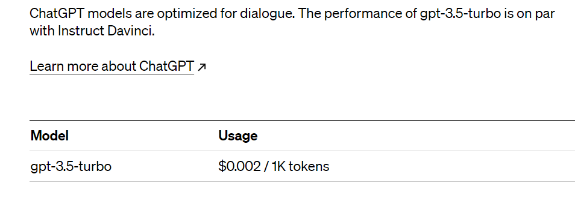

关于自建gpt的一些介绍以及一些问题
在本章中，对于我搭建的gpt网站进行一个介绍
首先，奉上体验网站，有时候可能因为人多响应失败，请稍等再试！--体验网站
在这一步中，您需要收集足够的文本数据，以便训练您的 GPT 模型。您可以使用公共数据集，也可以自己创建数据集。
自建的GPT是官网的吗？
答案是肯定的，自建gpt使用的是官网提供的api key，在官网对话主要用的是官网提供的页面，而自建gpt则是用到搭建在我自己服务器上的页面，但是他们的对话终点都是chatGPT官方的api。因此 唯一的不同点就是长得不一样。
为什么国内可以访问？
因为是搭建在服务器上的项目，所以我们访问的页面属于国内的服务器页面，服务器再通过代理使用外国的ip地址访问gpt官网，就可以沟通并把信息反馈给我们， 相当于自建的GPT就是一个中介，我们在自建的GPT上发消息，他替我们调用外国的官网api。
有什么好处？
首先，自建的GPT相对于官网比较稳定，官网使用时或多或少会有断连的情况，因为特殊原因这是不可避免地，而使用自建服务器不需要刷新页面也可以 随问随答。其次，访问官网需要使用魔法，在国内比较麻烦，并且魔法也有好有坏，可以节省买魔法的钱。
有什么不好的地方
那就是调用官方api不像使用账号直接再官网访问一样免费，调用是要收费的。如下图：
需要可以联系我
微信：xu2926428672